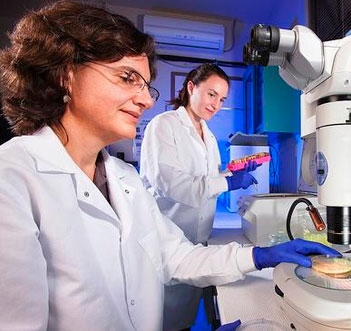

EXCLUSIV : Noile „tablete efervescente pentru slăbit” primesc cele mai mari note pentru popularitate în țara noastră. O mamă a doi copii din București a încercat produsul și a slăbit 20 kg în patru săptămâni!
Am primit un raport de la Alina, cu detalii despre această poveste senzațională despre slăbit. Special pentru cititori, editorii au decis să cerceteze toate detaliile noii diete cu și să descopere dacă într-adevăr este atât de eficientă cum se spune.

O jurnalistă, Alina,
investighează metoda neobișnuită de reducere a greutății, care este tot mai populară în țara noastră.
(Sănătatea mamelor).
În ultimele trei luni, cititorii noștri au fost înnebuniți de noua senzație pe internet, un remediu natural numit . Acesta a ajutat mii de femei din întreaga lume să-și reducă drastic greutatea și să elimine grăsimea de pe burtă. Acest sistem revoluționar pentru slăbit, numit „Sfântul Graal al slăbitului”, a devenit vedeta mai multor emisiuni de televiziune. S-a dovedit că instrumentul este 100% natural și, în același timp, oricine și-l poate permite.
Chiar și multe vedete străine, precum Vicky Pattison, Jessica Simpson, Ricky Gervais și Jonah Hill, au reușit să slăbească utilizând doar aceste tablete efervescente. Efectul lor fantastic a fost demonstrat clinic. Nu doar că ard rapid toată grăsimea depozitată, ci și curăță organismul de toxine, îl reîntineresc și accelerează semnificativ metabolismul. Toate acestea au rolul de a preveni depozitarea grăsimii pe viitor.
După cum au demonstrat cercetările noastre asupra diferitelor metode de a slăbi, acest proces este, în general, foarte dificil, iar rezultatele sunt de obicei minore sau temporare.
Cu toate acestea, după cercetări și interviuri numeroase cu persoane care folosesc , am realizat că acesta este, într-adevăr, o revoluție în domeniul dietelor. Citește mai departe și descoperă de ce am dedicat un număr întreg acestei metode.
Ultimele știri
Majoritatea persoanelor nu reușesc să slăbească deoarece lipsesc anumite ingrediente din dieta lor!
Spre deosebire de aditivii moderni, poate face minuni în ceea ce privește reducerea greutății și corectarea formei corpului. Combinația dintre acest produs și o dietă sănătoasă poate contribui la pierderea a 20 kg în două luni.
Tabletele efervescente de conțin magneziu, L-glutamină, grupul de vitamine B și potasiu.
Ce spun alții

Toate prietenele mele mi-au spus despre
. Am avut probleme cu excesul de
greutate încă din gimnaziu, deci, vă puteți imagina câți ani am
visat să mă simt bine și să arăt la fel de bine ca prietenele mele
slabe. După recomandările lor, am încercat
și nu-l voi înlocui niciodată cu
altceva. La urma-urmei, cu , am reușit
să slăbesc 12 kg pentru prima dată în viață, iar corpul meu este
acum pur și simplu perfect. Îmi iubesc noul corp!
Alexandra Mărieș Citește mai multe >>>
După ce am împlinit 20 de ani, am început să am probleme cu
greutatea în plus. Dintr-un bărbat slab și frumos, am devenit un
grăsan. Apoi am început să merg la sală, iar antrenorul meu mi-a
recomandat să beau foarte multă apă și să iau
de două ori pe zi. Rezultatele sunt
pur și simplu senzaționale: minus 14 kg în 4 săptămâni. Mulțumesc
atât de mult!
Aurel Popa Citește mai multe >>>

Ca mamă a trei copii, mă împart zilnic între copii, muncă și un
milion de alte lucruri...
Într-o zi, o prietenă mi-a dat . Am
început să slăbesc din prima săptămână. După o lună, nu puteam
crede că am devenit așa cum am visat dintotdeauna. Mulțumesc
pentru tot, ești un miracol!
Elena Citește mai multe >>>

Încercă acum!


„Am slăbit 13 kg!”, spune Beatrice
Cumpără
Cele mai multe diete nu funcționează, după părerea noastră, pentru că impun restricții nerealiste asupra stilului nostru de viață. În unele zile trebuie să mâncăm foarte multe proteine, în alte zile - carbohidrați. În ambele cazuri, facem schimbări semnificative în obiceiurile noastre alimentare.
În acest număr special, vom analiza în detaliu acest sistem câștigător pentru slăbit, care nu necesită diete sau sport și, cel mai important, nu dăunează corpului. Credem că reprezintă o adevărată revoluție în abordarea slăbitului.
Probabil ați auzit deja despre celebrele tablete efervescente la televizor. Acestea conțin magneziu, L-glutamină, grupul de vitamine B și potasiu.
Toate aceste ingrediente sunt concepute pentru a arde grăsimea în exces și pentru a accelera metabolismul.
Studiile efectuate la prestigiosul Centru de Cercetare UCLA din Los Angeles (SUA) asupra tabletelor efervescente au demonstrat că, utilizat regulat, acest remediu poate accelera metabolismul și capacitatea corpului de a arde grăsimea cu 318%.
Cu toate acestea, problema este că după succesul , au apărut multe produse contrafăcute pe piață, care sunt complet ineficiente în comparație cu produsul original.
Dar original a depășit chiar și cele mai îndrăznețe așteptări în ceea ce privește eficacitatea. Persoanele care au utilizat au reușit să-și reducă semnificativ greutatea, au devenit mai energice și mai active. Dar, dacă sunteți sceptici, nu sunteți singurii. Și noi am fost la fel atunci când am auzit prima dată despre aceste reduceri senzaționale ale greutății și nu am crezut imediat în eficacitatea produsului.
Cu toate acestea, după ce am decis că acest trend general merită atenția noastră, am început să studiem poveștile celor care au slăbit cu . Am fost interesați în special de faptul că aceste persoane nu și-au schimbat stilul de viață.


Una dintre cititoarele noastre, Mariana din Pitești, spune că a pierdut peste 20 kg în doar cinci săptămâni cu tabletele efervescente . A scris pe blogul său:
„Nu-mi venea să cred cât de ușor este, nu mi-am schimbat obiceiurile, dar grăsimea se topea ca untul, ador acest produs! În sfârșit am găsit ceva ce funcționează!

Un alt comentariu de la Iulia
Odată, am fost selectată să încerc tabletele efervescente naturale
, deoarece am vrut să pierd aproximativ
10 kg înainte de nunta mea, care urma să aibă loc peste trei luni.
Mi-au trimis tratamentul și l-am primit
după două zile.
Am avut foarte multă încredere în ,
deoarece a avut rezultate bune în timpul testelor clinice și a fost
aprobat de laboratoare de cercetare care au standarde foarte stricte
privind calitatea produselor și controlul acestora. După cum am fost
informată, acesta este unul dintre cele mai concentrate și pure
produse pentru slăbit de pe piață.
S-a dovedit științific că :
- - normalizează nivelurile hormonilor;
- - regularizează procesele metabolice, fortifică pielea, părul și unghiile;
- - reglează metabolismul, îmbunătățește absorbția substanțelor nutritive;
- - reduce nivelul de colesterol, reglează funcționarea tractului gastrointestinal;
- - elimină toxinele, arde grăsimea și activează procesele de reparare a celulelor.
Am luat de două ori pe zi, dizolvat în apă, timp de aproximativ o lună.
Rezultatul meu : Am pierdut peste 12 kg într-o lună, și port haine cu trei mărimi mai mici. Îmi vine să plâng de fericire!

Prima săptămână:
După o săptămână de utilizare a tabletelor efervescente, am fost surprinsă de cât de repede au început să funcționeze. Am început să am mai multă energie și aproape nu aveam poftă de mâncare. reduce apetitul și pofta de dulciuri.
Mă simțeam minunat.
Dar, cel mai important, nu am schimbat absolut nimic în viața mea de zi cu zi. În a șaptea zi, am urcat pe cântar și nu mi-a venit să-mi cred ochilor. Am slăbit 5 kg! Dar m-am abținut să mă entuziasmez prea tare, deoarece mi s-a spus că prima dată elimini excesul de lichide din organism. Am așteptat să văd ce se va întâmpla în continuare.
A doua săptămână:
După a doua săptămână, am devenit și mai energică, iar dispoziția mi s-a îmbunătățit. Un alt avantaj a fost că am început să dorm mai bine și nu mă mai trezeam în mijlocul nopții. Mai mult, mai rămăseseră doar 2 kg de dat jos, în doar două săptămâni slăbisem 8. Atunci am început să înțeleg că nu este doar o păcăleală, ci un remediu care funcționează într-adevăr.
A treia săptămână:
După 3 săptămâni, toate îndoielile mele au dispărut! Am mai pierdut 2 kg. M-a șocat că am slăbit atât cât am vrut! Aveam în continuare foarte multă energie, deși, în general, la sfârșitul săptămânii a treia de diete, corpul este de obicei extenuat, dar cu a fost chiar opusul: a devenit mai puternic. O altă observație pozitivă: procesul digestiv a fost îmbunătățit, iar inflamațiile au dispărut.
A patra săptămână:
După a patra săptămână, rezultatul final era incredibil, minus 12 kg într-o lună datorită lui . Rezultatele chiar sunt impresionante. La editura Sănătatea mamelor, toți mă felicită și se plâng că nu s-au oferit să facă ei experimentul. Desigur, eu, pe de o parte, nu aveam o greutate în exces prea mare, iar pe de altă parte, mă bucuram că slăbisem semnificativ și aveam mai multă energie.
Cu siguranță voi continua să iau o perioadă, deoarece conține mulți antioxidanți și vitamine care întârzie semnele îmbătrânirii și fac pielea să radieze.
Mă simt perfect fericită în noul meu corp zvelt.
Iar rochia de mireasă îmi vine perfect!
Am slăbit 12 kg în patru săptămâni, fără diete speciale sau exerciții.
În concluzie, dacă vă îndoiți în continuare de eficacitatea , trebuie să-l încercați ca să credeți; testele noastre au arătat că rezultatele sunt reale. La editura Sănătatea mamelor, studiem peste 100 de diete pe an și chiar dacă la început am avut îndoieli, am fost convinși rapid că chiar funcționează. După cercetările noastre, suntem încântați să anunțăm că testul a reușit.
IMPORTANT : * În timpul testelor clinice, s-a dovedit că, pentru a obține rezultate similare, produsul trebuie utilizat REGULAT .
Doamnelor, de obicei, nu scriem reportaje de acest gen, dar
acest produs este prea bun pentru a fi ținut
secret.
Încercați-l și spuneți-ne ce credeți!
Ne interesează părerile voastre!
Numărul de bucăți la ofertă este limitat. Reducerile mai sunt disponibile
Comentarii:
Ileana
cu o oră în urmă
Am auzit despre acest produs la televizor, dar nu am știut de unde să fac rost de el. Din fericire, am găsit din întâmplare acest site, unde se vinde la reducere. Măcar nu voi plăti prețul întreg dacă nu funcționează. Deși sper că voi slăbi cu el :)))
Emilia
cu o oră în urmă
Am tot amânat dieta, dar azi am comandat tabletele efervescente . Mulțumesc pentru sprijin! Azi, pentru încurajare, voi face și 30 de genuflexiuni ;)
Ionuț Tomescu
cu 2 ore în urmă
Salutare tuturor! Am văzut o emisiune despre tabletele efervescente la televizor și le voi comanda până mai este valabilă oferta. Îmi puteți spune dacă produsul funcționează și în cazul bărbaților? Nu uitați de noi data viitoare, haha!
Andreea
cu 2 ore în urmă
Și soțul meu a comandat și a testat produsul , mulțumim.
Margareta
cu 2 ore în urmă
Mama mea a aflat despre acest produs la muncă. Cred că funcționează bine
Ana
cu 3 ore în urmă
Am comandat tabletele efervescente acum 3 săptămâni, deși stocul era indisponibil atunci. Dar le-am primit în cele din urmă. Rezultatele sunt incredibile, nu credeam că un remediu natural poate fi atât de eficient.
Marieta
cu 3 ore în urmă
Chiar este 100% natural? Îl voi încerca în acest caz, nu iau produse sau medicamente chimice
Mario
cu 4 ore în urmă
Am început să folosesc tabletele efervescente ! Le iau doar de o săptămână, dar am început să mă simt mai energic și mai activ
Laura
cu 4 ore în urmă
Cumpăr o mulțime de lucruri de pe internet și nu pot să cred că nu am auzit despre Ce poveste fantastică! Mulțumesc!
Corina
cu 5 ore în urmă
nici nu mi-am imaginat că poți obține asemenea rezultate! Am comandat remediul datorită linkului vostru!
Carmen
cu 5 ore în urmă
Nu vreau să ratez oferta! Trimiteți-mi linkul, vă rog
Izadora Groza
cu 5 ore în urmă
Cumpărați doar de pe site-ul oficial al producătorului de aici , produsele contrafăcute nu funcționează deloc